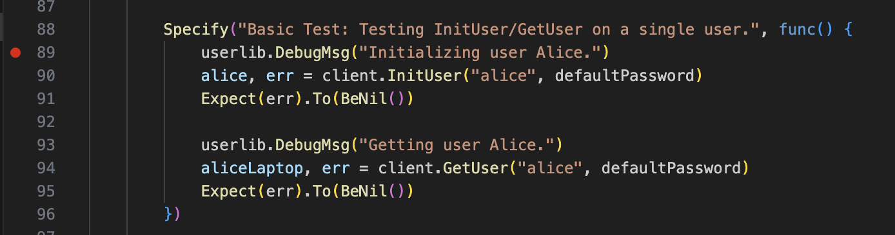
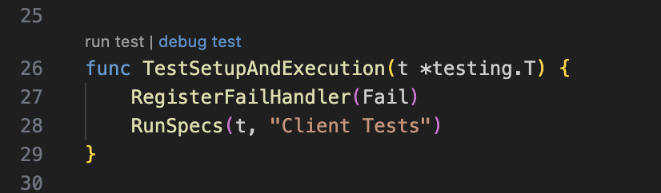
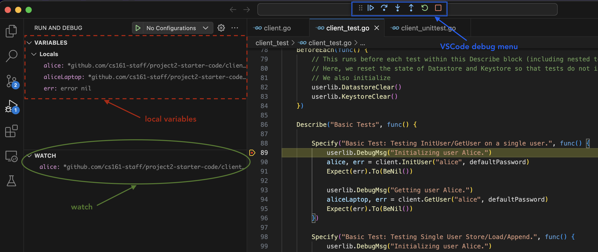

Debugging and Errors
This section does not contain any design requirements (i.e. you could complete the whole project without reading this section). However, we’ve compiled our general guidelines for design, development, and testing.
Debugging in VSCode
Once the extensions are installed we can now follow the debugging flow:
-
Set breakpoints. To set a breakpoint in your code, Navigate to the line where you want your breakpoint to be, and click on the left side of the line number. You should see a red dot appearing next to the line number, which indicates that a breakpoint has been set. 
-
Run a test. To debug a test case and peek around the breakpoint, navigate to the
client_test/client_test.gofile, and click on thedebug testbutton above the test case that you want to run. Immediately after, the debugger will start. If your debugger doesn’t pause at breakpoints you’ve set, this means that your code flow never went through any lines of code that you’ve set a breakpoint on.  -
Navigate the debugger. The golang debugger has a really convenient and powerful interface. There are a couple sections you should especially be aware of:
- You can step through your code using the menu bar at the center top of the screen just above the code editor (outlined in blue in the image below). Hover your mouse over each function to see the keyboard shortcut for each of these. This is a very important feature, so get familiar with each and every button.
- You can use the
local variablesat the top left quadrant of your screen (dash outlined in red in the image below), which displays the variable name and their values. For nested structures, you can click the expand button to view variables inside the struct. - You can use the
watchsection at the middle left quandrant of your screen (circled in green in the image below) to constantly evaluate golang expressions. Some of the thing you can use it for is to constant check the length of an array, which you can do withcall len([variable]). To constantly evaluate functions, you need to append the function call withcallfor watchpoints. - You can check the call stack in the
call stacksection, and edit breakpoints in thebreakpointssection. 
Debugging a Single Test Case
To learn how to debug a single test case, refer to our section on how to run a single test case.
Errors While Debugging
Here are solutions for a couple errors that you may run into while running the debugger.
Couldn't find dlv at the Go tools pathorcouldn't start dlv dap: Error cannot find delve debbugerpops up when you click theDebug testbutton, but runninggo test -vworks fine. This seems to be a problem due to recent updates to the Go extension on VSCode (and its compatability with delve). There are a couple possible solutions:- To solve the problem solely in VSCode, run
Go: Install/Update Toolsfrom the Command Palette. You can access the Command Palette by runningCmd + Shift + Pin Mac orCtrl + Shift + Pin Linux/Windows. Then markdlvanddlv-dapfrom the menu, and hit okay. This should start the update. You may need to restart VSCode after doing this. - For macOS users, you can also just run
brew install delve.
- To solve the problem solely in VSCode, run
- A general solution for other problems is making sure that you’re running Go >=v1.20. This is the suggested version of Go (you can check your version of Go by running
go versionin your terminal). For some people, you’ll need to download the most up-to-date Go version.
Common Gradescope Errors
Tests failed to compile! Grading cannot continue.but everything works when you rungo testlocally: This means that tests in yourclient_test.gofile utilize struct attributes or helper functions (not the core API functionality). However, since these tests are run against the staff implementation, you cannot use struct attributes in yourclient_test.go(otherwise, you’d be assuming what structs in the staff implementation look like).- Fix: If you want tests that check against struct attributes or helper function functionality, put these in the unit test file! he separation between unit and client tests is that unit tests test for your implementation correctness and can be implementation-specific (so you can access any extra client helper functions or struct attributes) while client/integration tests are implementation-blind, just checking that the overall functionality is correct.
- The distinction between the
client_test.gointegration tests and any tests you write inclient_unittest.goas unit tests is that integration tests should pass on anyone’s implementation whereas unit tests may be specific to your design. For integration tests, we want you to write tests to ensure the correct functionality of the client API that would hold under your implementation, the staff implementation, Evanbot’s implementation, etc. These are functionality and security tests (so you can write tampering tests too!), and shouldn’t be dependent on what structs the staff solution has.
Warning: Please remove all FSpecify statements when you submit to the autograder (otherwise, the autograder will only run tests labelled FSpecify) or potentially break the autograder. We cannot promise we will re-run the autograder for you if you forgot to remove them.